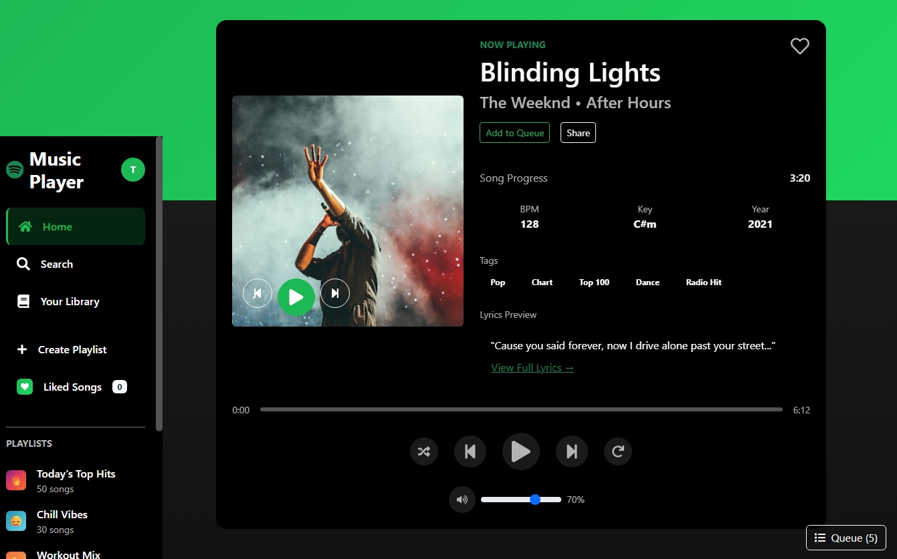

Spotify Clone
A front-end clone of the Spotify web application, recreating the core layout and user interface using only HTML5 and CSS3. The project replicates key Spotify UI components including a fixed left sidebar with navigation links, a main content area displaying featured playlists and albums, and a persistent bottom music player bar with track information and playback controls. The clone was built with a focus on pixel-accurate layout, CSS Flexbox and Grid for structure, and responsive design principles to ensure the interface adapts across different screen sizes.
- HTML5
- CSS3
- Flexbox
- CSS Grid
- Responsive Design
- Git & GitHub